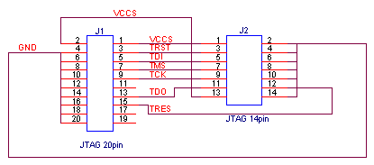
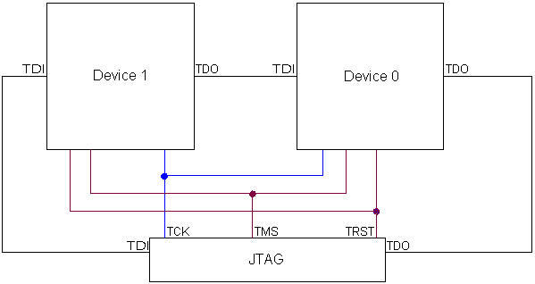

重要な情報
J-Link Ultraは、電力測定を確実に行うために調整することができます。J-Link Ultraを調整するには、次の手順に従います。
- J-Link Ultra JTAGのコネクタがターゲットボードから外されていることを確認します。
- J-Link UltraをPCに接続します。
- J-Link Commanderを起動します (
Program Files\IAR Systems\Embedded Workbench 5.4\arm\bin\jlink.exe)。 - "calibrate"と入力します。
J-Link/J-Traceプローブには、一部のデバイス向けのフラッシュプログラミング機能が備わっています。場合によっては、この機能がデバッガのフラッシュローダのしくみと衝突することがあります。たとえば、RAMで直接デバッグするためにデバッガのフラッシュローダを無効にすると、J-Link/J-Traceに内蔵のフラッシュローダがアクティブなままとなって、予期しない結果となる可能性があります。J-Link/J-Traceの内蔵フラッシュローダは、Embedded Workbenchがデバッグモードにあるときに、Windowsのタスクバーからアクセス可能なJ-Linkコントロールパネルを使用して有効/無効にすることができます。
To J-Link DCCファイル名がバージョン5.20で変更になりました。
DCC_Process.c、DCC_Process.h、DCC_HandleDataAbort.sではなく、JLINKDCC_Process.c、JLINKDCC.h、JLINKDCC_HandleDataAbort.sを使用してください。J-Linkを使用してデバッグするには、USBドライバをインストールする必要があります。ドライバは、インストール用CD-ROMの
drivers\JLinkディレクトリにあります。また、インストールディレクトリ...\arm\drivers\JLinkにも用意されています。J-Link in C-SPYの使用のヒントは、テクニカルノート76557にあります。
J-Linkのインストールについて詳しくは、IAR Embedded WorkbenchデバッグガイドとJ-Link / J-Traceユーザガイドを参照してください。
新機能
- なし
既知の問題
-
制限： Intel XScaleは現在サポートされていません。
-
制限： DCCは現在ARM11でサポートされていません。
-
低レベルのJ-Link C-SPYドライバでの既知の問題については、J-Link ARM DLLのリリースノートを参照してください。
-
存在しない周辺ユニットの場所から読み取る際に、デバッガが予期せずに終了することがあります。
[EW22344] -
J-Trace CM3とSTM32F207ZG-SKボードを使用して新しいデバッグセッションを開始するときに、トレースありのデバッグを最近実行したかどうかによって、"No trace frequency measured"(トレース頻度の測定が行われていません)というエラーが表示されることがあります。このエラーが発生したら、
[OK]をクリックして続行してください。
[EW22550] -
cspybatをJ-Linkとともに使用すると、SWO機能がサポートされません。
[EW24036]
プログラム修正
- なし
ユーザガイドの訂正
- なし
その他
-
J-Linkには20ピンのJTAGコネクタが同梱されます。14ピンのJTAGターゲットは、ケーブルで以下のように接続できます。

複数のARMコアのデバッグ
J-Linkは複数コアのデバッグを処理できます。この場合、複数のARMデバイスは、以下のように同じJTAGコネクタに接続されます。

リリース履歴
V8.11 2017-04-11
プログラム修正- なし
- なし
V8.10 2017/03/10
プログラム修正- なし
- なし
V7.80 2016-10-17
プログラム修正- なし
- なし
V7.70 2016-06-17
プログラム修正- なし
- なし
V7.60 2015-03-31
プログラム修正-
J-Link (Ultra+) の JTAG の速度設定は 25 MHz までに制限されていましたが、現在 50 MHz までに拡大されました。.
[EW25960] -
J-Link は STM32L151VD-X を認識しません。
[EW25972]
- なし
V7.50 2015-11-10
プログラム修正-
In EWARM 7.50.2
では、SWOクロック オプションの自動設定が正常に作動しませんでした。
[EW25801]
- なし
V7.40 2015-02-19
プログラム修正-
J-Link V9がTMS570デバイスに対して機能するようになりました。
[EW25147] -
EWARM 7.40.3:
C-SPYがブレークポイントを削除するマクロを実行するブレークポイント上で停止した場合に、異常終了しなくなりました。
[EW25419] -
EWARM 7.40.5:
SWO経由ターミナルI/Oの動作が改善されました。
[EW25612] -
EWARM 7.40.7:
C-SPY J-Link/J-Traceドライバを使用したデバッグセッションの直後に新しいデバッグセッションが開始したとき、C-SPYがクラッシュすることがありました。
[EW25744、EW25725]
- なし
V7.30 2014-09-24
プログラム修正- なし
- なし
V7.20 2014-05-19
プログラム修正-
J-Link Remote Serverへの接続が、「IP通信タイムアウト」というメッセージとともに終了することがあります。
[EW24493]
- なし
V7.10 2014-02-21
プログラム修正-
EWARM 7.10.3:
STR9 commanderツールのJLinkSTR91x.exeを起動する際、「リセットピンがHiに設定されていますが、Lowにする必要があります」という内容のメッセージが表示されます。
[EW24535]
- なし
V6.70 2013-10-29
プログラム修正-
J-LinkがEthernet経由でターゲットに接続できません。
[EW24194] -
ターゲットの実行中にSWOまたはETMトレースを有効あるいは無効にすると、煩わしいワーニングメッセージが表示されていました。これは修正されました。
[EW24204] -
EWARM 6.70.3:
リセット方式とCortex-M1に関して、誤解を招くワーニングがデバッグログウィンドウに表示されていました。
[EW24386]
- なし
V6.60 2013-06-27
プログラム修正-
execConfigureTraceSWO()またはexecConfigureTraceETM()マクロを実行せずに、動作中のCortex-Mターゲットへのアタッチが実行されるようになりました。
[EW23910] -
EWARM 6.60.2:
SWOまたはETMトレースの実行中にデバッグセッションを終了すると、クラッシュすることがありました。
[EW23196] -
EWARM 6.60.2:
ETBトレースがLPC185xで機能するようになりました。
[EW23946] -
EWARM 6.60.2:
ボードの電源をオフにしたときに、デバッガがクラッシュして終了しなくなりました。
[EW24142]
- なし
V6.50 2012-11-10
プログラム修正-
デバッグイメージに複数のシンボルがある場合、より明確なワーニングが表示されるようになりました。
[EW22957] -
コマンドラインオプション
--drv_communicationの使用時に、J-Link用のC-SPYドライバがCSpyBatとともに動作するようになりました。
[EW23574] -
EWARM 6.50.5:
現在、Cortex-AのFPUレジスタはJ-Linkドライバによってサポートされています。
[EW23805] -
EWARM 6.50.6:
FPUが有効にされる前にFPUレジスタを読み込もうとした場合でもC-SPYはクラッシュしなくなりました。
[EW23777]
- なし
V6.40 2012-06-05
プログラム修正-
旧バージョンでは、LPC1788/LPC1778デバイスでETMを有効にしたときに、デバッガが
IOCON_P0_10レジスタに0x08を書き込んでいました。これはもう起こらなくなりました。
[EW23133] -
EWARM 6.40.2:
[プロジェクト]>[オプション...]>[一般オプション]>[ライブラリ設定]>[stdout/stderr]が[SWO経由]に設定されている場合、J-Link/J-Trace接続インタフェースの設定にそれが正しく反映されるようになりました。
[EW23301] -
EWARM 6.40.2:
SWOが有効な場合、J-Linkドライバが常にCPUのステータスを取得できるようになりました。
[EW23290]
- なし
V6.30 2011-10-22
プログラム修正-
EWARM 6.30.3:
J-Traceを使用してSTM32デバイスをデバッグするときに、ETMポートが正しく初期化されるようになりました。
[EW22796、EW22822] -
EWARM 6.30.4:
STM32F4xxでETMトレースを有効にする場合、トレースポートが有効になりました。
[EW22903] -
EWARM 6.30.4:
LPC17xxでSWOを使用する際に、PINSEL10がデバッガによって設定されなくなりました。
[EW22698] -
EWARM 6.30.6:
特殊なリセット処理を必要とするStellarisデバイスで、CPUリセットが正しく実行されるようになりました。
[EW22935] -
EWARM 6.30.6:
ETMが有効なときに、割込みログと[タイムライン]ウィンドウの例外の名前が正しくなりました。
[EW22995] -
EWARM 6.30.6:
LPC11U14 (Cortex-M0)のハードウェアリセットの後で、ハードウェアブレークポイントが正常に機能するようになりました。
[EW22872] -
EWARM 6.30.8:
STM32F4デバイスを消去するときに、JLinkSTM32.exeユーティリティでデバイスが正しく識別されるようになりました。
[EW23184]
- なし
V6.21 2011-07-05
プログラム修正-
EWARM 6.21.2:
STM32F2xx/STM32L15xでETMトレースを有効にすると、RCC_AHB1ENR/RCC_AHBENRおよびGPIOEレジスタの適切なビットのみが有効になります。
[EW22552] -
EWARM 6.21.2:
J-Linkフラッシュローダのメカニズムが、STM32L15xデバイスで機能するようになりました。
[EW22639]
- なし
V6.20 2011-04-29
プログラム修正-
Cortex-A/Rターゲット上にある32ビットThumb命令のJ-Linkドライバの命令セットのシミュレーションが、正しく機能するようになりました。
[EW22179] -
マッピングがターゲットアプリケーションで
MEMMAPレジスタを通じて変更されたときにも、J-LinkフラッシュブレークポイントがLPC ARM7デバイス上で正しく機能するようになりました。
[EW22187] -
EWARM 6.20.2:
C-SPYマクロ__setCodeBreakが、仕様のとおりに機能するようになりました。
[EW22410]
- なし
V6.10 2010-11-04
プログラム修正-
ETMが使用できないときに、デバッガがETMからデータを取得しようとしなくなりました。
[EW21816] -
J-Link Ultraを使用してLPC 2378上でデバッグができるようになりました。
[EW21921] -
EWARM 6.10.2:
一部のJTAGやターゲットエラーに際して、デバッガが実行の停止を待って永久にハングすることがありました。デバッグセッションを中止したり、リセットしてから再試行して制御をやり直すことができるようになりました。
[EW22096] -
EWARM 6.10.2:
場合によっては、トレースベースの機能を使用する際に、デバッガで長時間にわたってアプリケーションを実行しても、ランタイムエラーのメッセージが表示されてIAR Embedded Workbenchが異常終了しなくなりました。
[EW22122] -
EWARM 6.10.5:
ARM7およびARM9のセミホスティングが、__vectorシンボルが0でないアドレスに配置されている場合でも失敗しなくなりました。
[EW22242]
- なし
V5.50 2010-04-21
プログラム修正-
ターゲットで使用される実際のブレークポイントタイプの情報を表示するときに、J-LinkコントロールパネルとC-SPYデバッガで一致しない点がありました。
[EW21604] -
ブレークポイントを設定する際のエラーメッセージが、あまり参考になりませんでした。
[EW21605] -
EWARM 5.50.5:
NXP LPC11xxおよびLPC13xxデバイスでのオンチップブートローダの正しい実行とマッピングに関する問題が修正されました。
[EW21769] -
EWARM 5.50.5:
特定のメモリエリアへのアクセスによって、致命的なエラーメッセージ"Failed to prepare indirect memory access, no RAM area configured!"(間接的なメモリアクセスの準備に失敗しました。RAMエリアが構成されていません)が表示されなくなりました。
[EW21801] -
EWARM 5.50.5:
致命的なエラーが表示される場合に、デバッガがクラッシュして終了しなくなりました。
[EW21827] -
EWARM 5.50.6:
TI Stellaris Tempest/Firestormデバイスで必要とされる特殊なリセットシーケンスを実装しました。
[EWARM-973]
- なし
V5.41 2009-12-14
プログラム修正- なし
- なし
V5.40 2009-07-10
プログラム修正-
J-Link使用時のARM11のダウンロードの遅さ。これは修正されましたが、スピードを速くするにはJ-Link v8またはそれ以降が必要です。
[EW20318] -
実行中のハードウェアリセットによって、実行が停止されたとC-SPYが認識することがありました。
[EW21106] -
EWARM 5.40.4：
SWOトレースデータが、シングルステップの実行中に収集できるようになりました。
[EW21339] -
EWARM 5.40.4：
STM32F10xデバイスの旧レビジョンに接続しているときに、C-SPY J-Linkドライバをバッチモードで実行可能になりました。
[EWARM-685]
-
トリガ条件およびフィルタ条件を持ったCortex-M3用J-Trace。
-
ARM7、ARM9、Cortex-M用の値の照合条件を持ったデータブレークポイント
-
64ビットのメモリアクセス。
V5.30 2009-01-23
プログラム修正-
ベクタキャッチ機能が正しく動作せず、場合によっては同じアドレスに2つのブレークポイントが設定されることがありました。
[EW20480] -
診断メッセージ"Debugger problem discovered:The debugger has set two breakpoints at the same address 0x00000008."（デバッガの問題が見つかりました：同じアドレス0x00000008に2つのブレークポイントが設定されました） が、SWIでベクタキャッチを使用し、セミホスティングを有効にしている場合に誤って表示されました。これは修正されました。
[EW20604]
-
なし
V5.20 2008-06-24
プログラム修正-
Cortex-M3で、PRIMASKレジスタがレジスタウィンドウで常に"0"と表示されていました。
[EW19974] -
[逆アセンブリ]ウィンドウが、割込みベクタを0x00-0x20で表示中にVICAddressレジスタなど (0xFFFFFF00 - 0xFFFFFFFF )へのアクセスを作成していました。これによって、IRQがトリガされなくなっていました。
[EW20160] -
Cortex-Mで、ハードウェアブレークポイントが消去されるときに削除されませんでした。これは、ブレークポイントが1つだけ設定されたときに発生していました。
[EW20251] -
ブレークポイントの復元機能とARM11を使用しているときに、デバッガが同じアドレスに2つのブレークポイントを設定可能でした。
[EW20221]
-
Cortex-Mにおける、SWOを介したトレースおよびターミナルI/O(出力)のサポート。
-
ARM7とARM9における、DCCを介したターミナルI/O(出力)のサポート。
-
J-Linkによるフラッシュダウンロードおよびフラッシュブレークポイント機能のサポート(オプション機能)。詳しくは、J-Link / J-Traceユーザガイドを参照してください。
-
新しいリセット方法が追加されました。
V5.11 28.11.07
プログラム修正-
実行中プログラムにアタッチするオプションを使用していて、スタックプラグインが有効な場合に、デバッグセッションを終了するとデバッガがクラッシュしました。
[EW19229] -
Cortex-M3上のブレークポイントでシングルステップを実行すると失敗し、そのブレークポイントのアドレスでターゲットが停止しました。
[EW18892]
-
ARM11のサポート。
-
新しいリセット方法が追加されました。
V5.10 2007-07-02
プログラム修正-
CPU ARM7TDMI-Sの使用時に、ARM9でのみ動作する一部の機能が、誤ってメニューから使用可能になっていました。
-
J-Linkドライバからダウンロード中に送られる診断メッセージが、誤ってワーニングとして処理されていました。
-
Cortex-M3で、デバッガがステップ中にハードウェアブレークポイントを有効なままにしていました。これによって、ターゲットが現在のアドレスで停止しているかのように見えていました。
[EW18848]
-
データブレークポイントがサポートされました。詳しくは、EWARMデバッグガイドのパート6：C-SPY ハードウェアデバッガシステムを参照してください。
- デバッガは、一部のARMデバイスで使用可能なETB (Embedded Trace Buffer) からのトレースデータを表示できるようになりました。これは、J-LinkおよびJ-Traceプローブの両方でサポートされています。
-
実行を中断せずに（非イントルーシブデバッグ）、実行中のシステムへの接続/接続解除がサポートされるようになりました。
-
ブレークポイントとメモリが、実行中に修正可能になりました。グローバル/静的変数が、実行中に[ライブウォッチ]ウィンドウで表示できるようになりました。この機能をARM7/ARM9で有効にするには、アプリケーションでDCCハンドラを繰り返し呼び出す必要があります。DCCハンドラコードは、
src\debugger\DCCにあります。 -
コプロセッサCP15にアクセスするためのマクロが追加されました。
-
JTAG TRST
__jtagResetTRST()のためのマクロが追加されました。